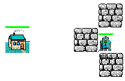
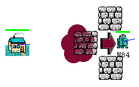
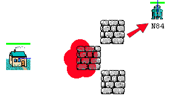
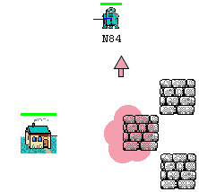
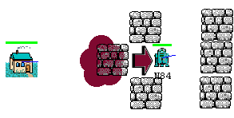

Projet Warbot
2003-2004 DEA Informatique
Carloni Olivier, Lorca Xavier
I.
La stratégie
générale
Le but d’un combat dans Warbot est de détruire la ou les bases de l’ennemi, nous avons donc concentré nos efforts sur cet objectif. Ainsi, d’une manière générale notre stratégie de jeu peut se résumer ainsi : l’objectif par défaut pour un RocketLauncher est de revenir à sa base ou de rester à proximité de celle-ci, l’objectif pour les Detectors est de trouver le plus rapidement possible les bases ennemies et enfin la Base est l’organe qui centralise la position des bases ennemies précédemment détectées et qui transmet aux RocketLaunchers la position de la base à attaquer.
Nous allons maintenant présenter le comportement spécifique de chaque agent.
1.
RocketLauncher

types de messages échangés par des RocketLauncher entre eux :
· « guerrier : guerrierHostile » : demande pour aller aider un autre RocketLauncher. Un guerrier qui choisit d’aller en aider un autre s’engage jusqu’à ce qu’il reçoive un message de libération « ok » ou qu’il puisse attaquer la cible désignée.
· « ok » : c’est un message de libération qui permet à un RocketLauncher d’annuler une demande d’aide.
· « guerrier : baseDetruite » : permet à un RocketLauncher d’informer les autres qu’il vient de détruire une base ce qui permet aux autres de changer d’objectif.
types de messages échangés par des RocketLauncher avec la ou les Bases :
· « base : baseHostile » : une base informe les RocketLaunchers qu’un ennemi est dans son périmètre et qu’il faut venir l’aider.
· « ok » : une base informe les RocketLaunchers que le ou les ennemis perçus on était détruit ou son sortis de son champ de vision.
· « base : baseEnnemie » : une base indique aux RocketLauncher la position de la base ennemie à attaquer.
· « guerrier : baseDetruite » : informe la ou les bases que la base ennemie a été détruite et qu’il est donc en attente d’une nouvelle cible.
· « base : maj1 » : mise à jour faite à intervalles de temps régulier pour permettre aux RocketLauncher de mettre à jour la position de la ou les bases amies mais aussi celle de la base ennemie à attaquer.
Abordons maintenant le comportement réactif d’un RocketLauncher. En effet, les perceptions d’un RocketLauncher sont utilisées pour son déplacement mais aussi en situation de combat. Ainsi, lorsqu’il perçoit plusieurs ennemis il va choisir d’attaquer prioritairement celui dont le niveau de vie est le plus faible. Il va être aussi en mesure de retrouver l’ennemi qu’il était en train d’attaquer au tour précédent par un calcul d’approximation de position (car la fonction getAgent() qui permet d’avoir l’adresse d’un agent à partir de son percept n’est pas implémentée !) tenant compte du déplacement éventuel de la cible. Ceci va permettre à un RocketLauncher de continuer à tirer (3 roquettes environ) même s’il ne voit plus sa cible.
2.
Base
Comme nous l’avons dit en introduction la base permet de coordonner la base à attaquer pour les RocketLaunchers. Pour cela, à chaque réception d’un message du type « eclaireur : baseEnnemie » reçu en provenance d’un Detector elle va mettre à jour une mémoire des bases ennemies déjà répertoriées (sans doublons) puis elle décide de la base à attaquer et ne changera plus son objectif jusqu’à réception d’un message « guerrier : baseDetruite » en provenance d’un RocketLauncher.
3.
Detector
Leur seul objectif est de parcourir la carte à la recherche d’éventuelles base ennemies. Dès qu’une base est perçue une message du type « eclaireur : baseEnnemie » est envoyé à toutes les bases amies.
II.
Les déplacements
dans l’environnement Warbot
1.
Evitement d’un agent face à un obstacle, en quête
d’un objectif
On considère la définition de
l’obstacle suivante :
Plus un objet perçu est :
·
devant l’agent (dans sa direction de
déplacement),
·
près de l’agent, plus cet objet fait obstacle à
l’agent.
En s’appuyant sur cette définition, on a pondéré la force d’évitement de l’agent en fonction de la distance euclidienne (agent, obstacle) et de la distance angulaire (direction agent, angle(obstacle, agent)).
Jusqu’ici nous avons la valeur de la force mais pas sa direction.
Pour calculer la direction de la force d’évitement issue d’un seul objet, on fait la somme de deux forces :
· la force de répulsion :
la droite = (agent, objet)
direction = objet → agent
· la force d’esquive :
la droite = la perpendiculaire à (agent, objet)
direction = comme il y a deux choix possible, on choisit la direction dir dont la distance angulaire avec le but da = angle (dir,but) est la plus petite, afin d’éviter de trop l’éloigner de son objectif.
Lorsqu’il y a plusieurs objets on fait la somme vectorielle de toutes ces forces.
Sous l’influence de cette force l’agent va avoir un comportement très proche de celui d’une goutte d’eau. En effet, on pourrait apparenter son déplacement vers l’objectif A au déplacement d’un goutte d’eau sur un plan qui s’est incliné vers A. Les obstacles sont des petits reliefs du plan que la goutte va contourner dans sa ‘chute’ vers l’objectif.
Malheureusement dans certaines situations, des ‘trous’ (obstacles creux) peuvent apparaître dans le plan et la goutte y restera piégée.

Nous avons étudié ce phénomène et proposons un méthode de résolution.
Pour se sortir des trous il faut que l’agent (la goutte) les remplissent afin de construire un nouvel obstacle ‘plein’ qu’il puisse éviter naturellement (avec l’évitement).

L’agent effectue ce remplissage
en ajoutant à ses percepts des obstacles flous virtuels (entre lui et son but)
qui vont le repousser fortement (appelés Red Zone) et qu’il conserve en mémoire
jusqu’à ce qu’il n’atteigne son but (ou que la mémoire est pleine). Les Red
Zones disparaissent petit à petit.

Il parvient ainsi à
s’extraire de l’obstacle creux, puis le contourner jusqu’à atteindre son but.

Comme il n’y a jamais de méthode parfaite, l’agent peut encore se bloquer. A force de remplir un obstacle creux, il risque de s’écraser sur un mur qui se trouve derrière lui.

2.
La recherche de la base adverse par les éclaireurs
Les éclaireurs utilisent aussi la notion de Red Zone pour rechercher la base adverse. En effet, pour éviter de parcourir toujours le même endroit, ils placent de temps à autre des Red Zone qui vont les repousser de l’espace déjà exploré. Ces Red Zones disparaissent au bout d’un temps fini. En plus, toute Red Zone ajoutée est communiquée aux autres éclaireurs afin qu’il n’aille pas explorer la partie d’un autre éclaireur. Cette méthode pose un sérieux problème : en effet , les éclaireurs à force d’ajouter et de recevoir des obstacles flous peuvent se bloquer contre un mur car il sont écrasés par l’ensemble des forces de l’espace exploré qui se trouve derrière eux.
Nous aurions pu inverser le champ de force lorsqu’ils se bloquent, afin qu’ils soient attirés par la frontière exploré/non-exploré de l’espace rempli de Red Zones qui se trouve derrière eux. Mais faute de temps nous avons décidé de vider la mémoire des Red Zones.
III.
Conclusion
De part le nombre de stratégie et
de techniques envisageables pour résoudre certains problèmes, il ne nous a pas
été possible de faire tout ce nous voulions. En effet, pour la partie gestion
des déplacements nous aurions pu améliorer l’utilisation des « Red
Zones », en particulier pour la recherche des bases ennemies. Pour la
gestion de la stratégie, il aurait été possible d’optimiser les méthodes de
combat en groupe, en particulier sur la prise de décision du guerrier à
attaquer car cette dernière est faite en local pour un agent alors qu’on aurait
pu envisager une prise de décision collective des agents ayant plusieurs cibles
en commun dans leurs percepts. D’autre part, on aurait pu envisager une gestion
plus fine du nombre de guerriers à envoyer pour attaquer les bases ennemies qui
aurait tenu compte du nombre de guerriers ennemis déjà tués, dans le but de
maintenir un avantage numérique lors des combats.